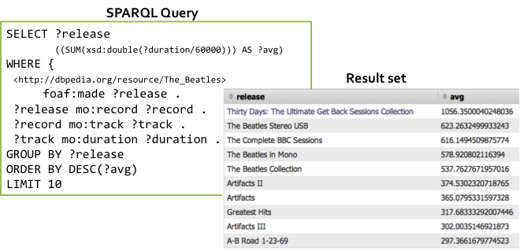

Sig.ma [9] is a text-based Linked Data browser. Interaction is usually initiated by a text search. Sig.ma returns all triples associated with the search terms. The returned triples are grouped according to predicate. Sig.ma lists all found values for each predicate. The sources of each triple are displayed in the right hand panel. Each source has a number that is used to reference each triple in the main body of the page.
Figure 18: The Sig.ma Linked Data browser.
For a particular predicate, such as title or label, Sig.ma may display the same information in multiple languages. Property values that are URIs can be followed in order to view the RDF data of that connected resource.
Figure 19: The Sig.ma Linked Data browser showing multiple values for a predicate.
Interaction with Sindice [10] also begins with a keyword search. A set or results that match the query are displayed. These can be filtered by document type, for example filtering results to only RDF documents. For each document, the user can inspect the RDF triples that it contains. The user can either inspect a cached set of triples or retrieve triples live from the resource.
Figure 20: The Sindice Linked Data browser.
This list of cached or live triples is displayed as a subject/predicate/object table. Sindice also offers other viewing options such as a graph of the triples.
Figure 21: Using Sindice to view the live or cached triples contained in a document.
The Information Workbench [11] is a platform targeted at the whole lifecycle of linked data application development including integrating, managing, analysing and exploring linked data. Here we focus on the visualization capabilities of the Information Workbench. Generally, visualizations are constructed using data returned from a SPARQL query. A number of different visualization techniques can be applied to the data including bar charts, pie charts, Google maps and timelines. The visualizations allow for user interaction including browsing and exploring the data. A demo system visualizing MusicBrianz using the Information Workbench is available at [12].
As with Sig.ma and Sindice, user interaction may begin via text search. In the figure below “The Beatles” has been used as a search term. The user may select full text search. In this case, different types of resources will appear in the results set. For example the resource representing the album “With The Beatles” will be returned as well as a resource representing the band itself. The search can also be limited to particular types of resources, such as music artists. More structured searches can be specified, for example, matching the query only to artists from a specified country. Structured search queries are re-represented as SPARQL queries issued against the dataset.
Figure 22: Keyword and structured search using the Information Workbench.
Having searched for the Beatles and selected the band from the results page, the user is directed to an information page about the Beatles. The top of the page is composed of mash-ups with web services. The panel to the top right show tweets mentioning the Beatles. Below this is a Google map showing the UK as their country of origin. Bottom right is a mash-up with last.fm and YouTube data.

Figure 23: Top of the Beatles page showing mash-ups with web services.
Further down the page we see actual visualizations of the data, each making use of particular SPARQL queries against the dataset. The visualizations show: a table of the track numbers and playing times for Beatles albums (top right), the locations of Beatles releases (top left), a timeline of Beatles release (bottom right) and the number of releases for different albums (bottom right).
Figure 24: Visualizations of Beatles data using a table, map, timeline and bar chart.
The visualizations provided by the Information Workbench also enable user interaction. To the left of the figure below we see a tag cloud of music artists. The size of the text represents number of releases. The text label of each artist is a hypertext link that directs the user to data associated with the resource representing that artist. From there, the user can continue to navigate across the dataset.
Figure 25: Linking from a tag cloud to an information page about this artist.
In the Information Workbench all visualizations are implemented as widgets. The region of the dataset of interest is specified using a SPARQL query. The SPARQL query below requests the top ten Beatles releases based on their duration. The easiest way to visualize a result set is displaying it in a table.

Figure 26: Returning a result set for a SPARQL query.
For many visualizations some level of configuration may need to be specified as well as the SPARQL query. In the example below, we can see that the type of visualization is specified on the first line. This is followed by the SPARQL query. Finally, any configuration settings are provided. If the returned data is to be presented on a bar chart then the author of the visualization will need to specify in the configuration settings the variables returned from the SPARQL query that correspond to the x-axis and y-axis. In the example below, release labels are placed on the x-axis and number of releases is placed on the y-axis. Other features of the visualization may be configured such as the colour and height.
Figure 27: Using a widget to specify a bar chart.
Using the same SPARQL query but with different widgets and configuration setting it is possible to create other visualizations of the same data such as a line chart or pie chart.

Figure 28: Line chart and pie chart visualizations of the same SPARQL query result.
The system can also suggest appropriate widgets for visualization depending on the returned data. In the example below, the results return the playing times for different Beatles albums (labelled 2). The widget auto suggestion link (labelled 1), provides a list of visualization types on the left. On the right (labelled 3) is the selected bar chart visualization. The auto-suggest facility provides a good way to experiment with different ways of visualizing the data.
Figure 29: Using the Information Workbench to auto-suggest visualization widgets.